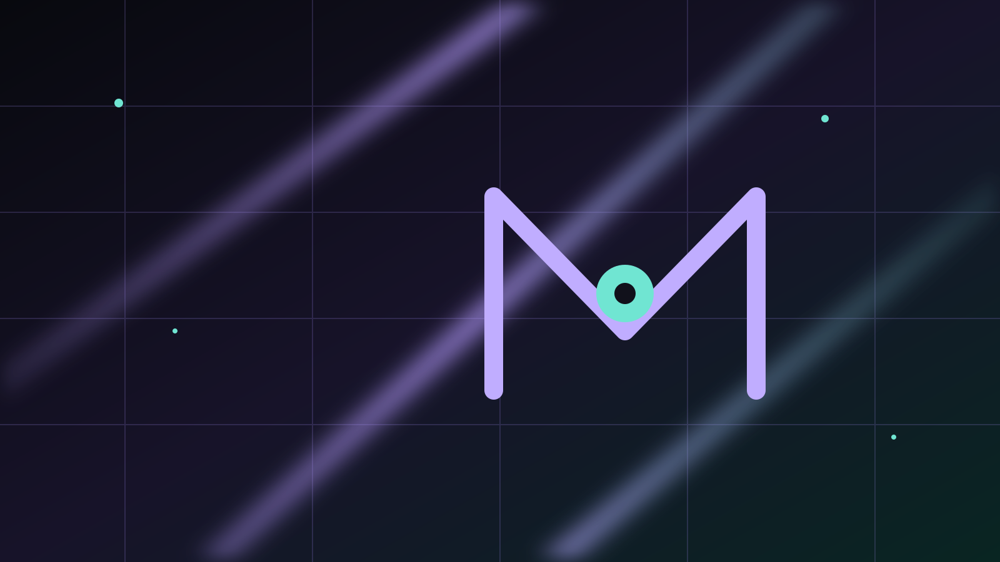
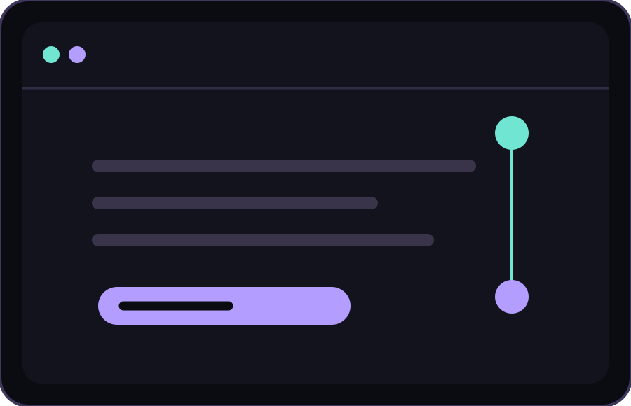
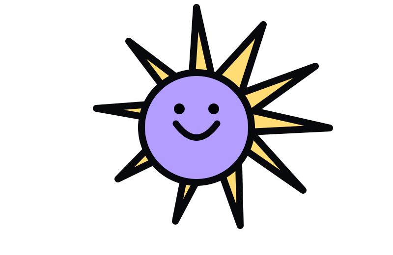
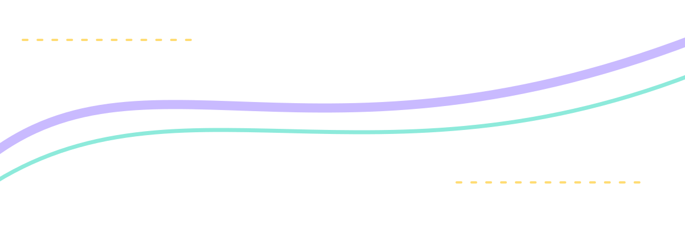

Personality, not noise.
Playful visual moments that never turn into orbital screensavers.
A calm, focused browser side panel with enough personality to keep your next thought moving. Built for Chrome and Edge. No orbitals. No clutter.

The useful stuff is one click away, while the background stays quietly alive with grain, glow, streaks, and a little comic-book mischief.
Playful visual moments that never turn into orbital screensavers.

A compact side panel that keeps your current page in sight.

One toolbar click, one clean launch, zero build step.

Every surface is tuned for contrast and calm: violet for imagination, cyan for signal, yellow for the occasional punchline.
Browse the visual kit →